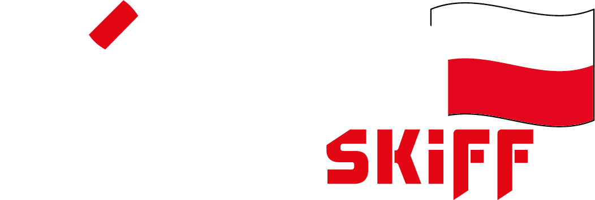

<nb-layout class="menu">

  <nb-layout-header fixed [hidden]="!(loggedin | async)">
    <div class="text-logo">
      <h3>ManageSkiff</h3>
    </div>
    <div class="skiff-logo">
      
    </div>
    <div class="coin-logo">
      
    </div>
    <div class="buttons">
      <nb-actions class="search">
        <nb-action title='wyloguj' link='/logout' icon="power-outline"></nb-action>
        <nb-action title='strona główna' link='/pages/dashboard' icon="home-outline"></nb-action>
        <nb-action title='szukaj'>
          <nb-search hint="Zacznij pisać" tag="mainSearch" placeholder="Szukaj..." type="rotate-layout"></nb-search>
        </nb-action>
      </nb-actions>
    </div>
  </nb-layout-header>
  
  <nb-layout-column>

    <router-outlet></router-outlet>
    
  </nb-layout-column>

  <nb-layout-footer fixed [hidden]="!(loggedin | async)">
    <small> &copy; Mateusz Budzisz {{ today | date:'yyyy' }}</small>
  </nb-layout-footer>

</nb-layout>
